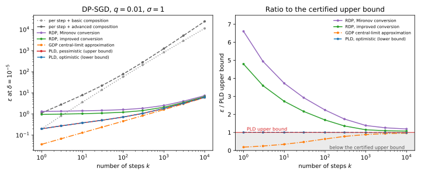
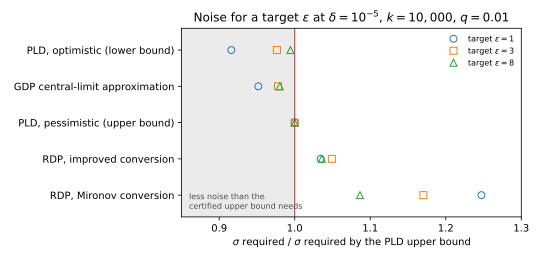

35 Choosing an accountant
35.1 Why this matters
You trained a model with differential privacy (DP), using stochastic gradient descent (SGD) with clipping and Gaussian noise, called DP-SGD: each record joined each batch independently with probability \(q = 0.01\) (Poisson sampling), gradients were clipped to norm \(C\), and noise of standard deviation \(\sigma C\) was added to their sum, with noise multiplier \(\sigma = 1\), for \(k = 10{,}000\) steps. Now you must write “the model is \((\varepsilon, 10^{-5})\)-DP” in a model card. The procedure that bounds or estimates \(\varepsilon\) is an accountant. On this run, composing per-step guarantees gives 11296.93, Rényi differential privacy (RDP) gives 7.4287 or 6.7127 depending on the conversion, the Gaussian differential privacy (GDP) central limit theorem (CLT) gives 6.0071, and a privacy loss distribution (PLD) accountant gives the interval \([6.1377, 6.2377]\). Which do you report, and what else must you say?
The numbers differ because they are different kinds of statement. An upper bound comes with a proof that the run is \((\varepsilon, \delta)\)-DP; it may be loose, but it is true. An approximation has no proof, and if it lands below the truth, the claim it supports is false. A certified lower bound says the true \(\varepsilon\) is at least this large: not a guarantee, but a referee for every other number. Hence the rule this chapter unpacks: report the tightest upper bound whose assumptions hold for the code you ran, with enough detail that someone else can recompute it.
35.2 Every accountant on one run
Every accountant starts from what one step reveals about one record. Along that record’s clipped gradient, in units of \(C\), the output is \(\mathcal N(0, \sigma^2)\) without the record. With it, the record is sampled with probability \(q\) and then shifts the output by 1, giving the mixture \((1 - q)\mathcal N(0, \sigma^2) + q\mathcal N(1, \sigma^2)\). Accountants differ in how much of this pair they keep before combining \(k\) copies, and whatever they throw away must be replaced by a worst case. So the more they keep, the tighter they are.
The crudest keeps two numbers per step, an amplified \((\varepsilon, \delta)\) pair (Amplification by subsampling), and composes them. That is a valid bound, but composition must assume every step leaks its worst case, while in reality the losses of different steps mostly cancel. It is right at \(k = 1\) and over a thousand times too large at \(k = 10{,}000\) (Table 35.1); advanced composition is even worse here.
RDP keeps a whole curve, the Rényi divergence of the pair at every order \(\alpha\) (Rényi DP). Curves add exactly under composition, and a conversion then turns \(k\) times the curve into one \((\varepsilon, \delta)\) pair (From Rényi DP to (ε, δ) and to tests). Mironov’s, the improved and the optimal conversion are each proved for every pair of distributions with that curve, so all three are upper bounds, ordered Mironov \(\ge\) improved \(\ge\) optimal \(\ge\) true \(\varepsilon\). The improved conversion beats Mironov’s at every order, so never use the older one.
RDP’s excess has two sources, and the run’s length decides which dominates. One is the conversion’s toll, \(\ln(1/\delta)/(\alpha - 1)\), about \(11.5/(\alpha - 1)\) at \(\delta = 10^{-5}\), paid however small the curve is. After one step the curve is tiny, the toll is most of the answer, and RDP with the improved conversion overstates the PLD by 379.1%. In a long run the toll is negligible, but the curve itself keeps only moments of the privacy loss, not its distribution: that costs the last 7.6% at \(k = 10{,}000\), and no conversion can remove it.
The GDP CLT treats the run as \(\mu\)-GDP with \(\mu = q\sqrt{k(e^{1/\sigma^2} - 1)}\) (f-DP and Gaussian differential privacy), since a sum of many small losses should be nearly Gaussian. But that is a large-\(k\) limit with no error bound, and \(\delta = 10^{-5}\) is read far in the tail, where a Gaussian approximation is least reliable. On this run it falls below the certified lower bound at every \(k\).
The PLD accountant keeps everything: the whole distribution of the privacy loss on a grid of width \(h\), composed numerically (Numerical accounting with privacy loss distributions). Rounding every loss up describes a pair that leaks at least as much as the real one, which stays true through composition, so the result is an upper bound; rounding down gives a lower bound. Each step’s rounding moves the loss by less than \(h\), so after \(k\) steps the two are at most \(kh\) apart: 0.1 here, with \(h = 10^{-5}\).
| \(k\) | Basic | Advanced | RDP, Mironov | RDP, improved | RDP, optimal | GDP CLT | PLD upper | PLD lower |
|---|---|---|---|---|---|---|---|---|
| 1 | 0.20 | 1.13 | 1.3175 | 0.9555 | 0.4899 | 0.0368 | 0.1995 | 0.1994 |
| 10 | 3.64 | 7.88 | 1.4145 | 1.0353 | 0.7951 | 0.1304 | 0.3800 | 0.3799 |
| 100 | 58.01 | 78.10 | 1.6118 | 1.2141 | 1.1538 | 0.4575 | 0.7185 | 0.7175 |
| 1,000 | 839.39 | 1258.64 | 2.5380 | 2.1014 | 2.1009 | 1.6177 | 1.8332 | 1.8232 |
| 10,000 | 11296.93 | 24379.55 | 7.4287 | 6.7127 | 6.7127 | 6.0071 | 6.2377 | 6.1377 |

Suppose you ran 1,000 steps. Your paper might say \(\varepsilon = 2.54\) (RDP with Mironov’s conversion, as in older code), 2.10 (RDP, improved), 1.83 (PLD) or 1.62 (CLT). The first three are true, and 1.83 says the most. The fourth is false: the optimistic PLD proves \(\varepsilon \ge 1.8232\), so the run is not \((1.62, 10^{-5})\)-DP.
35.3 Calibrating the noise for a target ε
In practice you fix the budget, the steps and the batch size, and ask how much noise to add. Then a loose accountant costs utility: it overstates \(\varepsilon\) at every \(\sigma\), so it asks for more noise to meet the same target. The averaged gradient’s noise has standard deviation \(\sigma C/(qn)\) for \(n\) records, so every percent of \(\sigma\) is a percent of gradient noise.
The noise accountant \(A\) requires for a target \(\varepsilon^*\) is the smallest \(\sigma\) at which its reported \(\varepsilon_A(\sigma)\) meets the target: \[\sigma_A(\varepsilon^*) = \min\{\sigma > 0 : \varepsilon_A(\sigma) \le \varepsilon^*\}. \tag{35.1}\] More noise never raises a correct accountant’s \(\varepsilon\): a noisier run can be made from a less noisy one by adding independent noise, without looking at the data, and that cannot reveal more. So this is where a decreasing function crosses a level, and bisection finds it. Return the end of the final bracket where \(\varepsilon_A \le \varepsilon^*\) was actually checked, never the midpoint, which may miss the target.
| Target \(\varepsilon\) | Advanced | RDP, Mironov | RDP, improved | GDP CLT | PLD upper | PLD lower |
|---|---|---|---|---|---|---|
| 1 | 24.682 | 4.974 | 4.126 | 3.796 | 3.988 | 3.654 |
| 3 | 10.505 | 1.854 | 1.662 | 1.549 | 1.584 | 1.547 |
| 8 | 5.711 | 0.962 | 0.917 | 0.868 | 0.885 | 0.880 |
With \(n = 50{,}000\) records the expected batch holds 500. At \(\varepsilon = 8\), RDP with the improved conversion sets \(\sigma = 0.917\) and the PLD \(\sigma = 0.885\): 3.6% more noise for the same certified budget (Table 35.2). Across the targets the improved conversion costs 3.4 to 4.9% more noise, less than its 7.6% excess in \(\varepsilon\), because in this range a small rise in \(\sigma\) buys a larger fall in \(\varepsilon\). Mironov’s conversion costs 8.6 to 24.7% more, most at the strictest target, where its toll weighs most.

Calibrate with the accountant you will report, and never with the CLT. It asks for 2.0 to 4.8% less noise than the certified bound needs, and at \(\varepsilon = 8\) that is provably too little: at its \(\sigma = 0.8676\) the optimistic PLD already gives 8.2594. At small targets the PLD’s fixed width \(kh\) is a large fraction of \(\varepsilon\): at \(\varepsilon = 1\) it brackets \(\sigma\) only to \([3.654, 3.988]\), so refine \(h\).
35.4 Where each accountant is tight
The ranking changes with the mechanism, by the principle above: an accountant is tight when its summary describes the mechanism’s privacy loss exactly.
For the plain Gaussian mechanism, with no subsampling, the composed pair is exactly Gaussian, and GDP describes it with one number, \(\mu\), whose squares add. GDP is then exact. A team that releases 100 noisy counts at \(\sigma = 10\) has exactly \(\mu = 1\) and \(\varepsilon = 4.3772\); an old RDP accountant with Mironov’s conversion reports 5.2985, 21.0% too high, and the improved conversion 4.7285, because RDP keeps this curve exactly but still pays in the conversion.
For pure-DP steps such as randomized response, the privacy loss takes only a few values, so the PLD needs no rounding and is exact. For 100 steps of randomized response at \(\varepsilon_0 = 0.1\), the exact PLD gives 4.3068, RDP 4.6154, zero-concentrated differential privacy (zCDP) 4.7263, advanced composition 5.8502 and basic composition 10.0000: each summary that keeps less pays more.
For DP-SGD, subsampling makes each step a mixture that no closed form describes exactly, and only the PLD is both certified and tight. zCDP is the wrong tool here: its single line \(\rho\alpha\) must lie above the RDP curve at every order, and at high orders the subsampled curve’s slope approaches the unsubsampled one, so the line cannot express the gain from subsampling. When the noise, the stopping time or per-record budgets are chosen during training, the per-step pair is no longer fixed in advance as the PLD accountant assumes; an RDP filter at a fixed order loses nothing to that adaptivity (Adaptive composition).
| Mechanism | Use | Avoid |
|---|---|---|
| Gaussian, no subsampling | GDP, or zCDP converted exactly | Per-step \((\varepsilon, \delta)\) composition |
| Poisson-subsampled Gaussian (DP-SGD) | Pessimistic PLD, optimistic value as error bar | zCDP; the CLT as a guarantee |
| Pure-DP steps (randomized response, Laplace, exponential mechanism) | PLD (exact for finite outputs), or RDP with the mechanism’s own curve | Advanced composition when a tighter accountant is available |
| Adaptive noise, stopping or per-record budgets | RDP filter at a fixed order | Plugging realized \(\varepsilon_t\) into a fixed-parameter theorem |
| Local randomizers behind a shuffler | Exact computation or a numeric bound (Amplification by shuffling and by iteration) | The Poisson-subsampling accountant |
| Only the last iterate released | Amplification by iteration, for convex smooth losses with no released checkpoints | Any hidden-state claim for non-convex training |
35.5 Matching the accountant to the code
An accountant takes \(q\), \(\sigma\) and \(k\) and trusts that the code does what its theorem assumes. A mismatch makes the number a statement about a different algorithm.
The sampling scheme is the most expensive mismatch, for a mechanical reason. With fixed-size random batches, adding a record must push another one out, so the batch sum can move by up to \(2C\) instead of \(C\), and such a run is covered by the Poisson accountant only at noise multiplier \(\sigma/2\) (Lebeda et al. 2024). With shuffle and partition, each record is used exactly once per epoch, in a batch fixed by the shuffle, and no amplification theorem holds for every dataset. What remains certain is one unamplified Gaussian step per epoch, for zero-out neighbours (one record’s gradient replaced by zero).
In a code review: a script uses a data loader with shuffle=True and batch_size=500 on 50,000 records for 100 epochs, and calls an RDP accountant with sample_rate=0.01, which reports 6.71. That sampler is shuffle and partition, so what holds is 100 unamplified steps at \(\sigma = 1\): \(\mu = 10\) GDP and \(\varepsilon = 91.8173\), or 284.39 under replace-one, where the sum moves by \(2C\). Fixed-size random batches, accounted correctly, would give 47.42 (RDP) and 43.42 (PLD). Switching to Poisson sampling makes the PLD’s 6.24 honest. The factor of 6.96 from fixed-size batches dwarfs the factor of at most 1.19 between RDP and PLD at 10,000 steps: check the sampler before arguing about accountants.
Other assumptions fail quietly. If you tune 10 configurations on the private data and release the best, which one is best depends on all 10 runs, so the release costs all 10 composed: \(\varepsilon = 27.23\) with RDP. The guarantee protects whatever differs between neighbours, so example-level DP protects each example, not a person who contributed many. And the theorems assume exact real-valued Gaussian noise; floating-point sampling can break a mechanism that is correct on paper (Discrete and floating-point-safe mechanisms).
| Item | The accountant assumes | Check in the code | If it does not match |
|---|---|---|---|
| Sampling scheme | Poisson sampling at rate \(q\) | Each record included independently, variable batch sizes? | Fixed-size random batches: account with noise multiplier \(\sigma/2\). Shuffle and partition: report the guarantee without amplification, for zero-out neighbours |
| Neighbouring relation | Add/remove one record | Add/remove, replace-one or zero-out? | Under Poisson sampling, replace-one costs more per step: about twice the add/remove cost for a pure-DP step with small \(\varepsilon\) |
| Privacy unit | One example | Can one person contribute several examples? | Clip and sample per user, or pay group privacy |
| Hyperparameter tuning | Not counted | Was anything chosen from results on the private data? | Account for the tuning runs, or tune on public data |
| Adaptive parameters | \(\sigma\), \(q\), \(k\) fixed in advance | Early stopping, noise schedules, per-record budgets? | Use a filter |
| Implementation | Exact Gaussian noise, exact clipping | Floating-point noise, accumulation across devices | Outside the accountant: verify the implementation |
35.6 What to report
An \(\varepsilon\) without its assumptions cannot be checked or compared. NIST SP 800-226 (2025) and Ponomareva et al. (2023) ask for the setting (who is trusted), what is covered (one run, or tuning too), the unit of privacy, the neighbouring relation, the accountant and whether its assumptions hold, and, for DP-SGD, everything needed to recompute \(\varepsilon\): sampling scheme, \(q\), \(k\), \(\sigma\), \(C\), and the accountant’s version and discretization.
Choose \(\delta\) with its meaning in mind: it is the probability with which the promise may fail. A mechanism that publishes one randomly chosen record in full meets a \(\delta\) of about \(1/n\) with \(\varepsilon = 0\), while exposing someone completely. So \(\delta\) must be much smaller than \(1/n\) for \(n\) units of privacy (The definition of differential privacy): Ponomareva et al. suggest \(n^{-1.1}\), and NIST gives \(1/n^2\) as a common recommendation and calls values above \(10^{-5}\) suspicious. For \(n = 50{,}000\), \(1/n = 2.0\times10^{-5}\), so the customary \(\delta = 10^{-5}\) is only half of it.
Report \(\varepsilon\) at several \(\delta\), not one pair. Many different mechanisms share a single \((\varepsilon, \delta)\) pair and behave differently at smaller \(\delta\), so a reader cannot convert your pair to the \(\delta\) they care about. One composed PLD gives the whole profile cheaply (Table 35.5). For the same reason, give the parameters behind any conversion: the RDP accountant’s is its curve, \(\varepsilon(4.1) = 3.7336\) at the best order 4.1, which the improved conversion turns into 6.7127.
| \(\delta\) | PLD upper | PLD lower | RDP, improved |
|---|---|---|---|
| \(2.0\times10^{-5}\) (\(1/n\)) | 6.0068 | 5.9068 | 6.4884 |
| \(1.0\times10^{-5}\) | 6.2377 | 6.1377 | 6.7127 |
| \(6.8\times10^{-6}\) (\(n^{-1.1}\)) | 6.3641 | 6.2641 | 6.8353 |
| \(1.0\times10^{-6}\) | 6.9574 | 6.8574 | 7.4140 |
| \(4.0\times10^{-10}\) (\(1/n^2\)) | 9.0502 | 8.9378 | 9.4540 |
A filled-in statement:
Privacy guarantee. The model was trained with DP-SGD in the central model: the training server is trusted to run the code below, and the guarantee covers every intermediate noisy gradient, hence every checkpoint and the final model. Unit of privacy: one training example; each person contributes at most one example. Neighbouring relation: add or remove one example. Training: Poisson sampling with rate \(q = 0.01\) (\(n = 50{,}000\) examples, expected batch size 500), \(k = 10{,}000\) steps (100 epochs), per-example clipping norm \(C = 1\), Gaussian noise multiplier \(\sigma = 1\). Accountant: privacy loss distributions, pessimistic discretization on the grid \(h = 10^{-5}\), both add and remove directions. Guarantee: \((6.24, 10^{-5})\)-DP and \((9.06, 4.0\times10^{-10})\)-DP. The optimistic discretization gives 6.1377 and 8.9378, so the accountant’s own error is at most 0.1000 and 0.1124. For comparison, the RDP accountant with the improved conversion gives 6.7127 at \(\delta = 10^{-5}\). Not covered: hyperparameters were tuned on a public proxy dataset; no tuning on the private data was performed. If the sampling assumption failed (for example, shuffled fixed-size batches), the guarantee without amplification is \((91.82, 10^{-5})\)-DP for zero-out neighbours.
Three habits in it follow from what an upper bound is. It is rounded up: 9.0502 becomes 9.06, because 9.05 would be a claim the accountant has not certified. The optimistic value is its error bar, which an RDP number cannot have, since RDP has no matching lower bound. And where an assumption is in doubt, the statement gives the fallback guarantee that does not rely on it.
35.7 Checking an accountant
Test an accountant on cases whose answers you know. With \(q = 1\) there is no subsampling, so \(k\) steps are exactly \(\sqrt k/\sigma\)-GDP, and every upper bound must lie above that closed form. For \(\sigma = 1\) and \(k = 10\) the exact \(\varepsilon\) is 17.8566, and the RDP accountant gives 19.0536, above it as it must be. The CLT formula at \(q = 1\) gives \(\mu = 4.1452\) instead of 3.1623 and \(\varepsilon = 25.5853\): it fails, because its derivation assumes small \(q\). The PLD bracket for the plain Gaussian must contain the same closed form, and it does: \([17.8516, 17.8616]\) at \(h = 10^{-3}\).
Two properties hold for every correct accountant, so a violation is a bug, not slack. The orderings of Section 35.2 must hold at every \(k\), with no reported upper bound below the optimistic PLD. And \(\varepsilon\) must never decrease with \(k\), because what the first \(k\) steps release is part of what \(k + 1\) steps release.
Then compare against an independent library: Google’s dp_accounting (RDP and PLD), Opacus (RDP, GDP, and a privacy loss random variable (PRV) accountant, its default), or Microsoft’s prv_accountant. When two RDP accountants disagree, the size of the gap says why: the improved conversion beats Mironov’s by \(\frac{\ln\alpha}{\alpha - 1} + \ln\frac{\alpha}{\alpha - 1}\) at order \(\alpha\) (0.3612 at order 10); on the running example it is what separates Mironov’s 7.43 from the improved 6.71. Certified PLD and PRV brackets from different libraries each contain the truth, so they must overlap; if they do not, one has a bug.
35.8 Code
The snippet is a small RDP accountant for DP-SGD (exact subsampled-Gaussian RDP at integer orders, improved conversion), the GDP closed form used by the checks, and the noise calibration of Equation 35.1.
from math import e, erfc, exp, lgamma, log, sqrt
def normal_cdf(x: float) -> float:
return 0.5 * erfc(-x / sqrt(2))
def gdp_epsilon(mu: float, delta: float) -> float:
"""Exact epsilon at delta of a mu-GDP mechanism, by bisection on its delta(eps) curve."""
def gdp_delta(eps: float) -> float:
return normal_cdf(mu / 2 - eps / mu) - exp(eps) * normal_cdf(-mu / 2 - eps / mu)
lo, hi = 0.0, 1000.0
for _ in range(200):
mid = (lo + hi) / 2
lo, hi = (mid, hi) if gdp_delta(mid) > delta else (lo, mid)
return hi
def subsampled_gaussian_rdp(alpha: int, q: float, sigma: float) -> float:
"""Exact RDP at an integer order of one Poisson-subsampled Gaussian step."""
if q == 1.0:
return alpha / (2 * sigma**2)
terms = [ # log of each term of the binomial sum, combined with log-sum-exp
lgamma(alpha + 1) - lgamma(j + 1) - lgamma(alpha - j + 1)
+ (alpha - j) * log(1 - q) + j * log(q) + (j * j - j) / (2 * sigma**2)
for j in range(alpha + 1)
]
top = max(terms)
return (top + log(sum(exp(t - top) for t in terms))) / (alpha - 1)
def rdp_epsilon(q: float, sigma: float, steps: int, delta: float) -> float:
"""Upper bound on DP-SGD's epsilon: RDP on integer orders 2..64, improved conversion."""
return min(
steps * subsampled_gaussian_rdp(a, q, sigma) + log((a - 1) / a) - (log(delta) + log(a)) / (a - 1)
for a in range(2, 65)
)
def sigma_for_target(eps_target: float, q: float, steps: int, delta: float) -> float:
"""Smallest noise multiplier meeting the target, by bisection; returns the end that was checked."""
lo, hi = 0.3, 50.0
while hi - lo > 1e-4:
mid = (lo + hi) / 2
lo, hi = (lo, mid) if rdp_epsilon(q, mid, steps, delta) <= eps_target else (mid, hi)
return hi
q, sigma, steps, delta = 0.01, 1.0, 10_000, 1e-5
print(f"{rdp_epsilon(q, sigma, steps, delta):.4f}") # 6.7194
print(f"{gdp_epsilon(q * sqrt(steps * (e - 1)), delta):.4f}") # 6.0071
print(f"{sigma_for_target(3.0, q, steps, delta):.3f}") # 1.665
print(f"{gdp_epsilon(sqrt(10) / sigma, delta):.4f}") # 17.8566
print(f"{rdp_epsilon(1.0, sigma, 10, delta):.4f}") # 19.8017
print(f"{gdp_epsilon(sqrt(10 * (e - 1)), delta):.4f}") # 25.5853
print(f"{gdp_epsilon(sqrt(100) / sigma, delta):.4f}") # 91.8173The first three lines are the running example: the RDP bound, the CLT value (below the PLD lower bound, so not a guarantee) and the noise for \(\varepsilon = 3\). The rest are checks: the exact \(q = 1\) value, the RDP bound above it, the CLT failing it, and the shuffle-and-partition fallback. Integer orders give 6.7194, 1.665 and 19.8017 where the full edition’s fractional orders give 6.7127, 1.662 and 19.0536: a coarser grid costs tightness, never validity. The full edition’s script, choosing_an_accountant.py, runs every accountant, PLD included, in about two and a half minutes:
uv run python code/part04-privacy-accounting/choosing_an_accountant.py35.9 Cheat sheet
| Accountant | Kind | \(\varepsilon\) at \(k = 10{,}000\) | \(\sigma\) for \(\varepsilon = 3\) | When to use it |
|---|---|---|---|---|
| Per step + advanced composition | Upper bound | 24379.55 | 10.505 | Never for DP-SGD |
| RDP, Mironov conversion | Upper bound | 7.4287 | 1.854 | Never: the improved conversion is free |
| RDP, improved conversion | Upper bound | 6.7127 | 1.662 | Quick bounds, adaptive filters, many heterogeneous mechanisms |
| PLD, pessimistic | Upper bound, within \(kh\) of the truth | 6.2377 | 1.584 | The number to report |
| PLD, optimistic | Lower bound | 6.1377 | 1.547 | The error bar, and the referee for other accountants |
| GDP CLT | Approximation | 6.0071 | 1.549 | Intuition only; under-reports here |
Rules of thumb
- Report the pessimistic PLD with the optimistic value beside it, and calibrate \(\sigma\) with the accountant you will report. Never report a CLT number as a guarantee.
- Check the sampling scheme first: fixed-size or shuffled batches accounted as Poisson is the most expensive error in practice.
- Report \(\varepsilon\) at several \(\delta\), including one well below \(1/n\), with everything needed to recompute it.
35.10 Further reading
- Ponomareva et al., “How to DP-fy ML: A Practical Guide to Machine Learning with Differential Privacy” (JAIR 2023): matching accounting to the data pipeline, setting \(\delta\), and what to report.
- Near, Darais, Lefkovitz & Howarth, “Guidelines for Evaluating Differential Privacy Guarantees” (NIST SP 800-226, 2025): what an evaluator will ask of your claim.
- Lebeda, Regehr, Kamath & Steinke, “Avoiding Pitfalls for Privacy Accounting of Subsampled Mechanisms under Composition” (IEEE SaTML 2025): fixed-size batches versus Poisson sampling.
- Gopi, Lee & Wutschitz, “Numerical Composition of Differential Privacy” (NeurIPS 2021): the PRV accountant with certified error bounds, and where the CLT under-reports.
Derivations. Every result in this chapter is derived step by step in the full edition’s chapter.